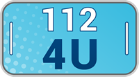
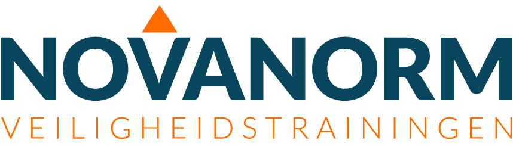
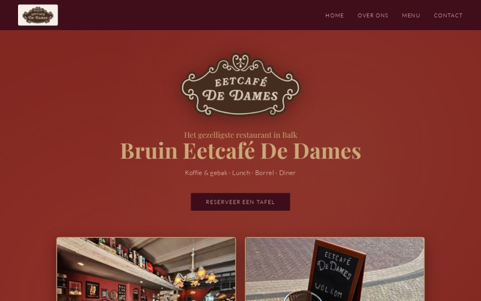

Projecten in de praktijk
Verschillende sectoren, één rode draad: waarde-innovatie en pragmatische inzet van AI.
-

Nieuw systeem BHV-wereld (112-4U) Kortere lestijd en effectievere trainingen door een innovatieve aanpak. -

Herstructurering Bosman Opleidingen (nu Novanorm) Van 5 naar 1,25 FTE bij gelijkblijvende omzet en cursusaanbod, door interne optimalisatie. -

Website Eetcafé De Dames Compleet nieuwe website gerealiseerd met inzet van AI als productieversneller. -
Facilitaire tools voor GBBC AI ingezet voor slimme, dagelijks bruikbare facilitaire oplossingen.